模型分享
9月27日STl图纸文件分享
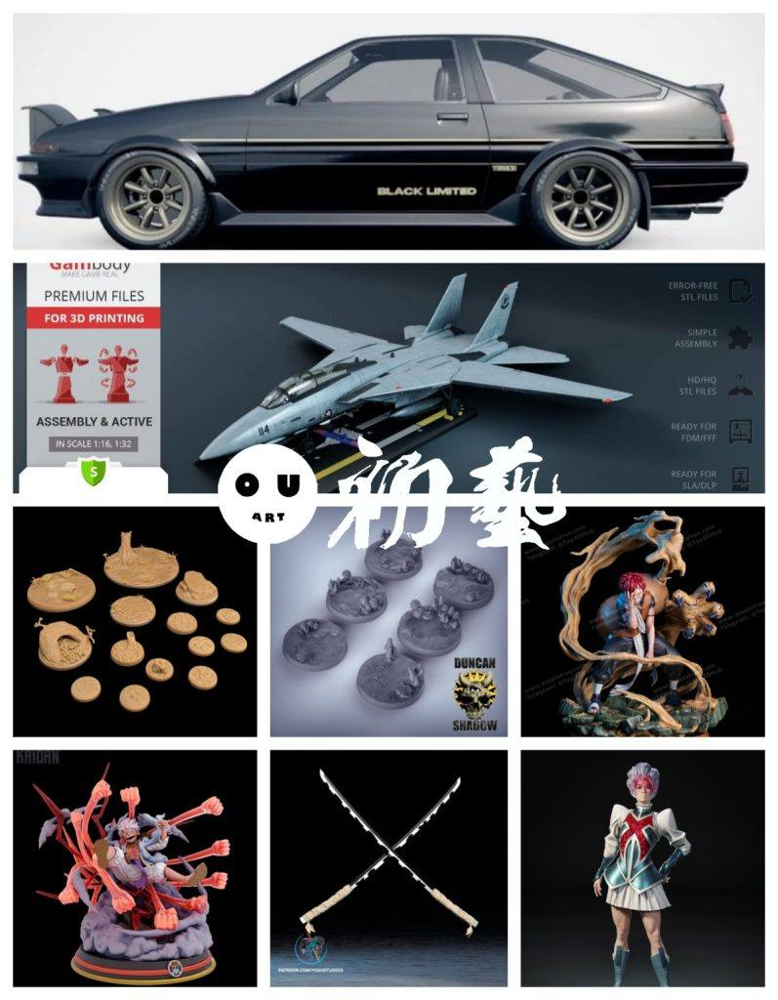
1.丰田AE86，经典车型，车内部很细致，不过模型是一体成型的，要用需要手动分分模。
链接：https://pan.baidu.com/s/18CfeVJQ-AQeVlhzBzAsXtw
提取码：36ck


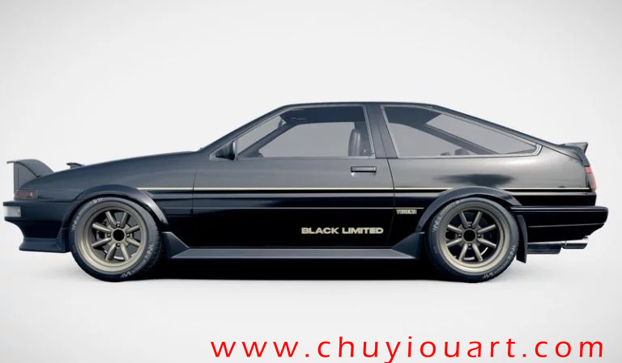

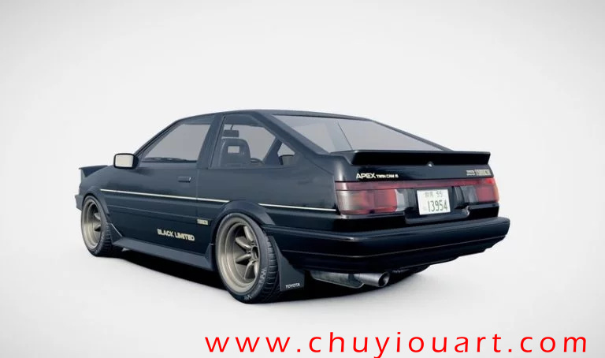

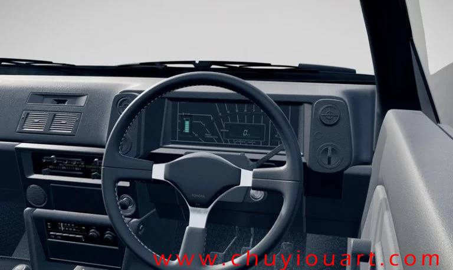


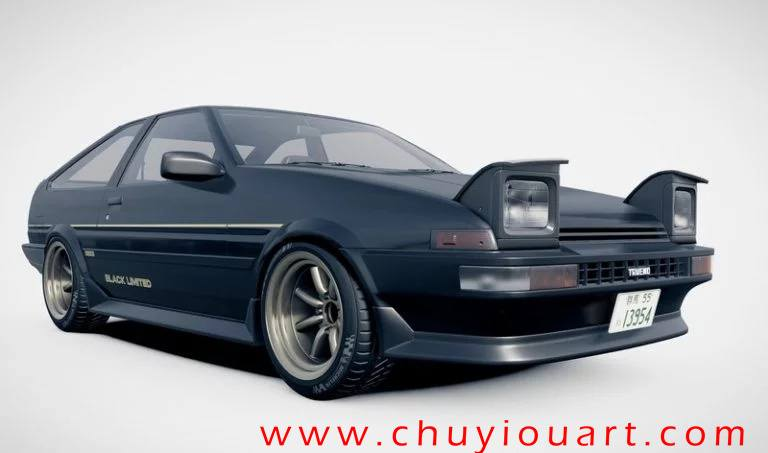
2.F-14，gambody家出的这类模型特点就是分件细致到螺丝钉，把载具这类模型做到头了。
链接：https://pan.baidu.com/s/1Eu0HonQnTK_icbEmFLJcrw
提取码：il31
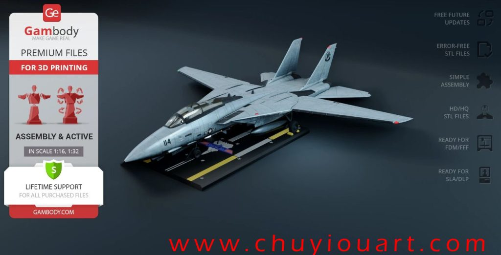
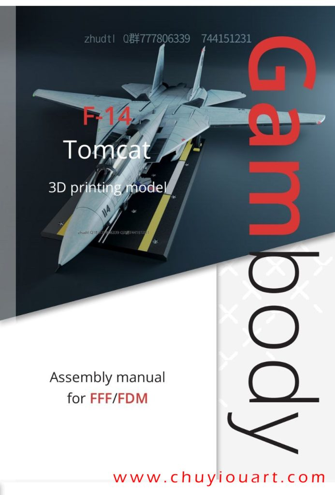

3.自然系地台，共13个，可搭配各类主体。
链接：https://pan.baidu.com/s/1ta1XVCUsr8De7OoarB-pIA
提取码：f9jt
–来自百度网盘超级会员V9的分享


4.蘑菇地台，6各不同造型，适合阴暗和湿地场景和主体，比自己做强，虽然自由度低一些。
链接：https://pan.baidu.com/s/1v3ff84qc_guMXqSoYwRdIw
提取码：xlds


5.火影忍者——我爱罗，应该是逆向建模的文件，这类如果不分件，很难有好效果，大家记得要看文件不能只看图。
链接：https://pan.baidu.com/s/1o0Wj5qx_8eT33eCeDYxS3w
提取码：ii5f
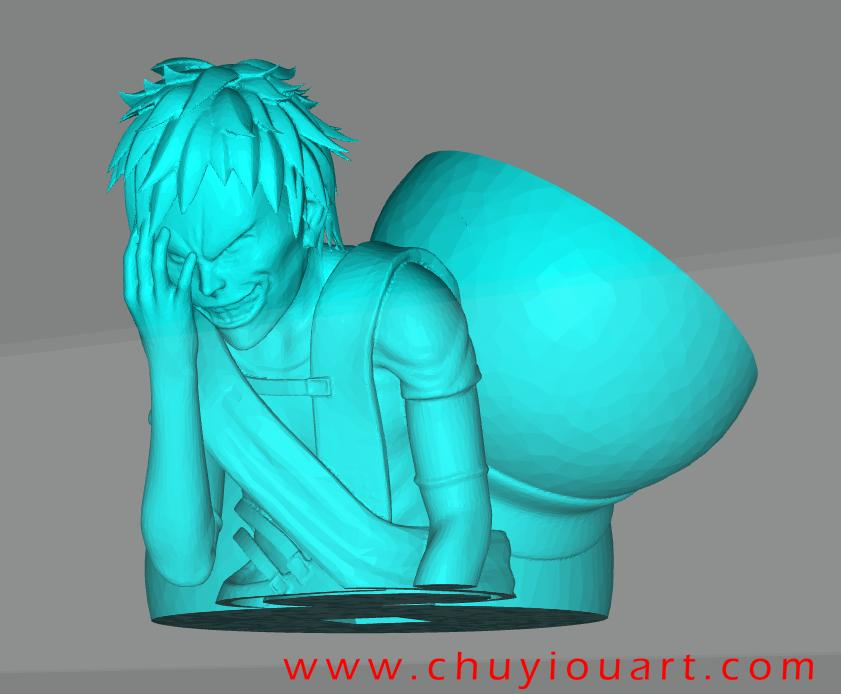


6.路飞，尼卡乱拳造型，精度嘛，可以从这个草帽判断，只能说偏向动漫风格，闪电特效件可以用一下。
链接：https://pan.baidu.com/s/1M5j0NVzq7DomyV5Fli-SzA
提取码：iwn1
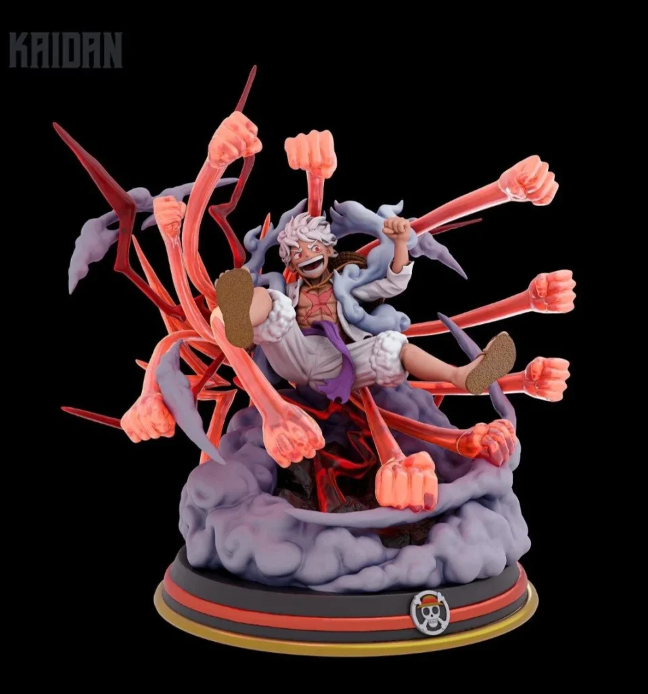


7.伊之助的刀，这个和之前分享的伸缩刀的模型不一样，这个是实体的，不能伸缩的，可以做好些，漫展cos用起。
链接：https://pan.baidu.com/s/1n3-mQt8f-6bhBjv9acdxsg
提取码：qna8

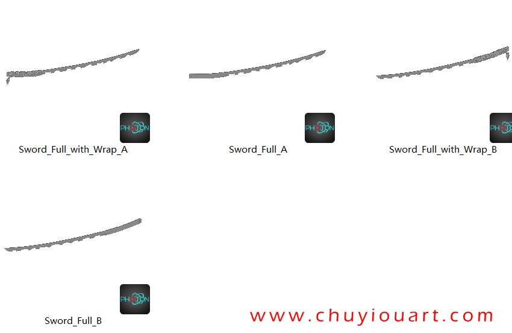
8.英国队长地狱火庆典，精度非常高，适合学习，测试精度也能用。
链接：https://pan.baidu.com/s/1h8VRiRg6DZ244shv5OKZsA
提取码：igfm

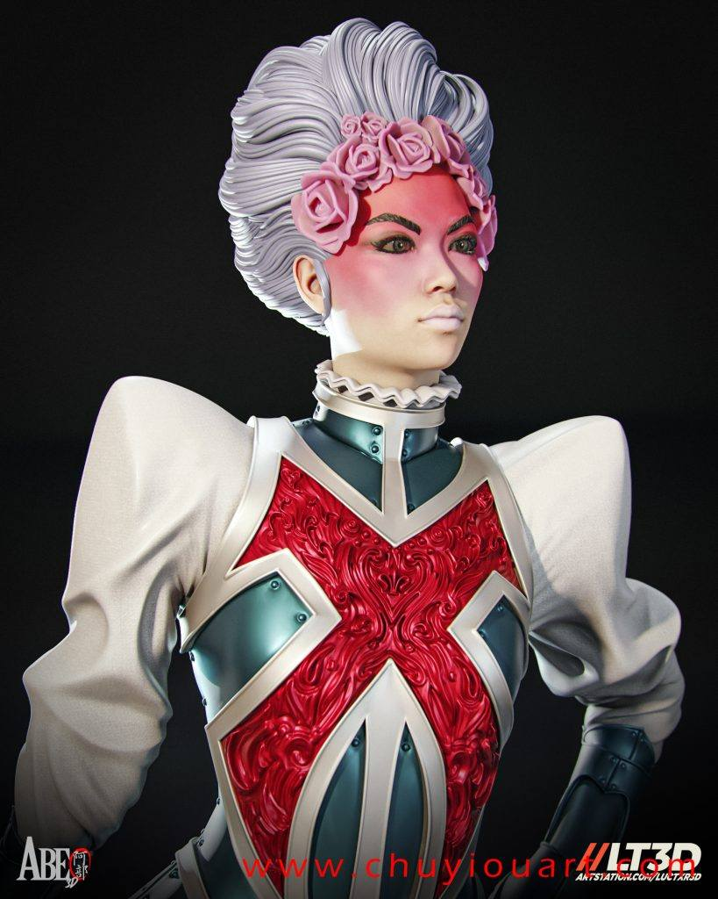
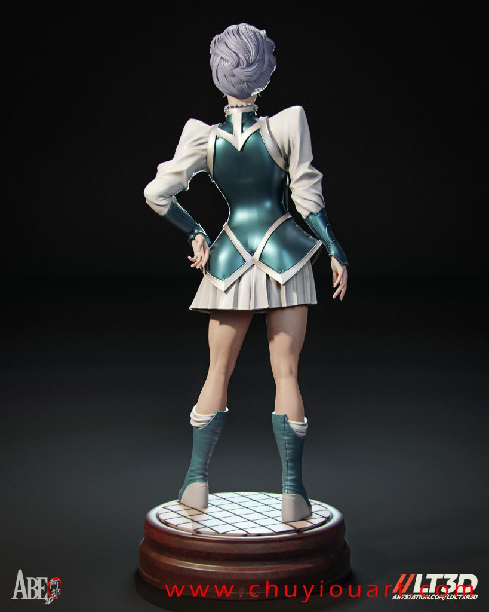
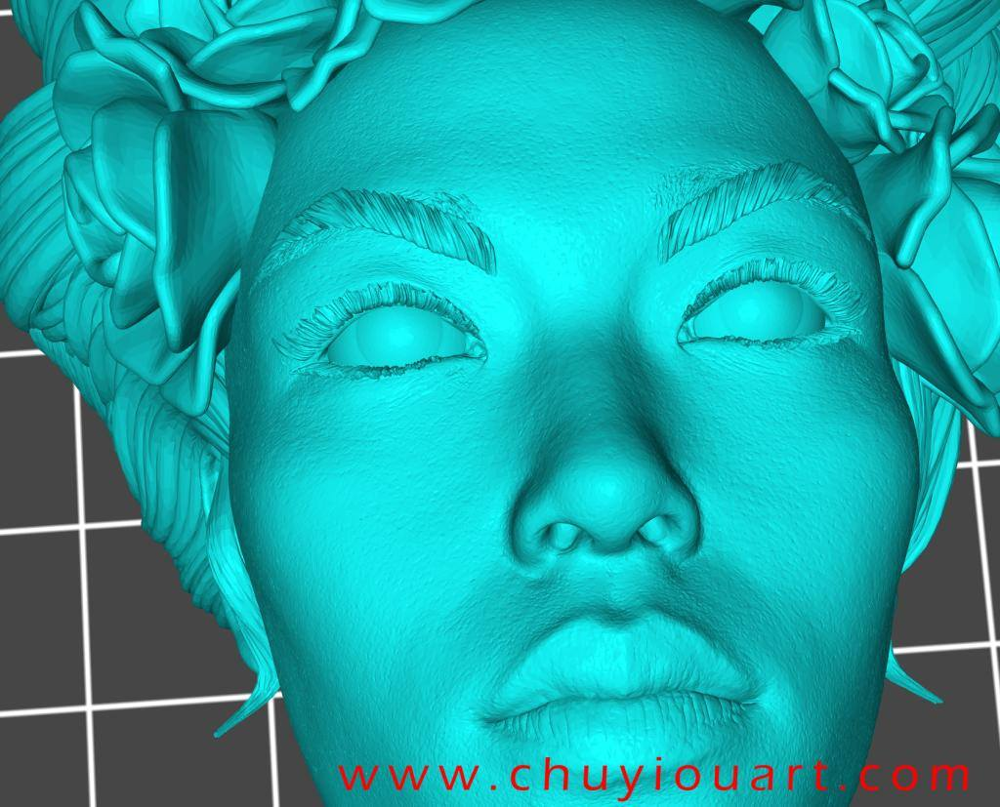

以上内容仅供个人使用（非商用）
ONLY for PERSONAL (NON-COMMERCIAL) use.
加群获得更多免费模型！